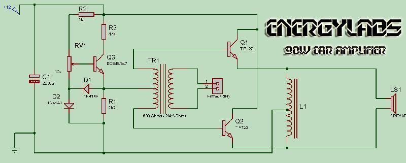
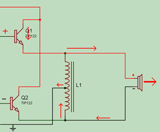
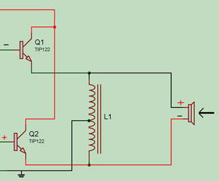

Modulo Automotivo
Bom estou aqui com um projeto que interessa há muitas pessoas. A maioria das pessoas que tem módulos de som no carro, nem imagina que ele é bem parecido com um amplificador normal, porém há um detalhe a ser considerado. A entrada de um Modulo de som automotivo é para alta potencia ( > 10W ). Apesar de isso ser uma desvantagem pra quem vai tentar usar um modulo desses no som em casa (pois necessita de um amplificador de pelo menos 10W), há vantagens que devemos considerar aqui:
=> O módulo de som, é basicamente a etapa de potência de um amplificador comum. Isso significa que a qualidade é definida somente pela qualidade do amplificador que alimenta a entrada do módulo e da qualidade dos transistores usados na construção.
=> O circuito é reduzido potencialmente devido há adição de um transformador de áudio na entrada, que faz o papel de casar a impedância aos transistores e também o papel do inversor do sinal de áudio (algo necessário quando se usa 2 transistores iguais para o módulo).
Bom, vamos aos passos para a construção. Primeiro as peças necessárias:
=> 2 Transistores TIP122, recomendado 4 transistores.
=> 2 Diodos 1N4148
=> 1 Capacitor 2200uF 16V (Ou voltagem/capacitância maior)
=> 1 Resistor 1K 1/4W
=> 1 Resistor 47K 1/4W
=> 1 Resistor 2K2 (2,2K) 1/4W
=> 1 Trimpot 10K 1/4W (ou 1/8W)
=> 1 Transformador para áudio (600 Ohms no primário e 2/4/8 Ohms no secundário), pode ser usado um transformador de 6V ou 12V com primarios de 110 e 220.
=> 1 Indutor com centro. 48+48 Voltas de fio AWG em volta de um núcleo de transformador (5x2cm). Pode ser usado uma bobina de saída de um modulo de som queimado.
Bom, abaixo vai o esquema:

Alguns detalhes a serem atentados no esquema:
=> Os transistores Q1 e Q2 devem estar em um dissipador de calor grande.
=> Os diodos D1 e D2 devem estar junto com os transistores Q1 e Q2 no dissipador.
=> Os diodos D1 e D2 servem para ajustar a corrente de acordo com o calor no dissipador.
=> O Trimpot RV1 deve ser ajustado até o consumo do modulo em repouso ser algo em torno de 80mA.
Após a montagem, é ligar ele sem nada na entrada e um alto falante de 4 ohms na saída e um multímetro/amperímetro para medir a corrente. Ajustei o Trimpot até ele marcar algo perto de 80mA (70-90mA). Depois disso é só usar!
Bom, acho que a maioria quer saber como funciona. Bom eu vou explicar:
Tudo começa no TR1, onde há no secundário 2 enrolamentos unidos pelo meio. Com referencia o centro dos dois. Enquanto um lado é positivo, o outro é negativo. Então os transistores Q1 e Q1 nunca irão chavear ao mesmo tempo. Para o ganho do transistor é necessário deixar o nível na bobina, diferente de 0V. Para isso o circuito a esquerda com o BC548, isso ajusta uma parte da corrente que o transistor TIP chaveia. Assim quando os diodos D1 e D2 esquentam, eles conduzem menos energia para o terra, subindo a voltagem nos dois Transistores.
A parte de amplificação com os transistores TIP122, é bem simples também. Como as bases dos transistores vão sempre ter sinais opostos, o chaveamento dos transistores serão opostos.
Abaixo vai uma figura para ilustrar o fluxo:

Como visto na figura, a energia segue pelo alto falante, passa pela bobina e chega ao negativo da fonte (terra). Caso o fluxo seja positivo em relação a polaridade do alto falante, o cone irá para frente.
Porém há outro transistor que faz a fase oposta:

Como nesse caso o fluxo é oposto á polaridade do alto falante, o cone do alto falante irá para dentro.
Simples não?
Bom, há também um detalhe que vocês devem estar pensando, a bobina L1 não deve conduzir diretamente quando ligada?
Sim, por isso a corrente que o módulo consome não pode ser usada como referencia a potencia do módulo, sempre é necessário medir a corrente que flui pelo alto falante para fazer o calculo.
A formula? Bom é a mais simples da eletrônica, se usa a Lei de Ohm para isso:
U = R * I
ou seja
Potência = Corrente * Voltagem
Exemplo?
Bom, esse módulo consome cerca de 8A com 2 Ohms de carga. A alimentação é 12V então:
Potência = 8 * 12
Potência = 96W
Simples de usar não?
Dúvidas? Me contate!
ENERGY LABS BRASIL

Esta obra de EnergyLabs Brasil, foi licenciada com uma Licença Creative Commons - Atribuição - Partilha nos Mesmos Termos 3.0 Não Adaptada.
Permissões adicionais ao âmbito desta licença podem estar disponíveis em http://www.energylabs.com.br.